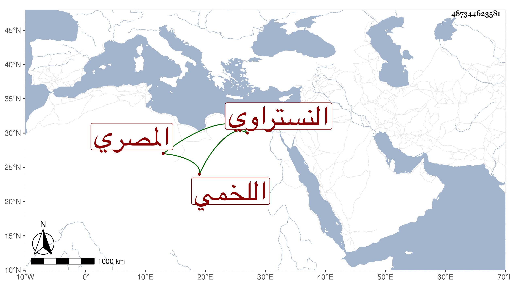

0902Sakhawi.DawLamic.ITO20230111-ara1.EIS1600.487344623581
Biography ID: 487344623581
969
محمد بن أحمد بن أحمد بن عبد العزيز بن عبد الكريم بن أبي طالب بن علي بن سيدهم الشمس اللخمي النستراوي الأصل المصري ابن أخي كريم الدين عبد الكريم بن أحمد الماضي . ولد سنة سبعين وسبعمائة تقريبا وباشر الديوان مدة إلى أن ولي عمه نظرة الجيش فباشر قليلا ثم ترك وتزهد ولبس الصوف وسمع معنا على كثير من مشايخنا ، وكان يحب أهل الخير وينفر غاية النفرة ممن يتزوكر واستمر على قدم التصوف سبعا وثلاثين سنة مع صحة العقيدة وجودة المعرفة والصبر على قلة ذات اليد . مات في ليلة الجمعة ثاني عشر شعبان سنة ثمان وعشرين . قاله شيخنا في أنبائه ووقع عنده تسمية جده محمدا والصواب ما قدمته .
